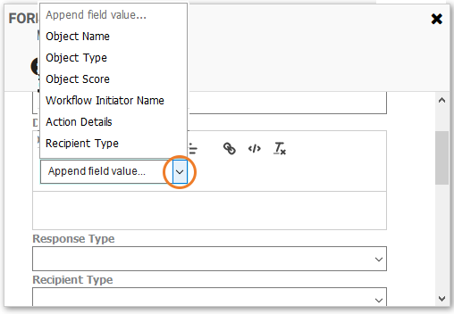
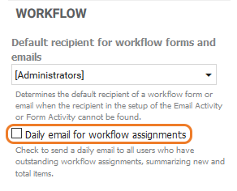
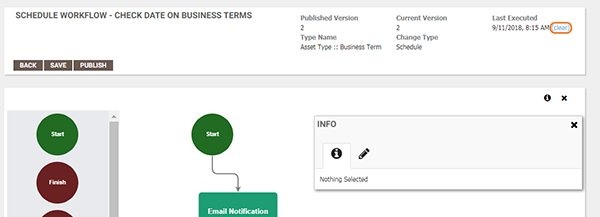

Workflow email tokens
|
|
|
When building or editing a workflow with Email Notification or Form activities, administrators can add tokens as placeholders to build the body of an email. A new Recipient Type token has been added in this release to inform users why they have received an email notification or form assignment. For example, if the selected Recipient Type for the activity is to notify all Data Stewards, when the Recipient Type token is used, the email message would be "You are receiving this email as a default user in the Data Stewards group".
|
GOV-5331 |
|
|
|
In addition to using workflow tokens in Email Notification and Form activity emails, workflow tokens can now also be added to the Description field of a Form activity. This helps to provide users who are completing a form with the required context so that they can properly respond.

See Configuring email notifications.
|
GOV-4623 |
|
Workflow summary email
|
|
|
To enable administrators to control the number of workflow assignment emails that users receive, a new option has been added to the Administration > Settings page that adds the ability to send daily workflow summary emails to users with outstanding assignments. The daily summary email groups the open tasks into one email, rather than sending separate Form assignment emails.

When this setting is enabled, a daily summary email is sent to users who have outstanding workflow assignments. The summary email details any outstanding workflow assignments that were generated from a Form step in a workflow, and summarizes new and total items.
To avoid receiving separate emails for each new assignment and only receive the summary email, the option Send form email? should not be selected when building a workflow with a Form activity. Note that emails sent as part of Email Notification workflow steps are not included in the summary email.
By default, this setting is not enabled and summary emails are not sent.
The subject of the summary email indicates how many items require your attention, and the body of the email contains links to open the assignment details in the application, for example:

See Sending workflow assignment emails.
|
GOV-4592
|
|
Scheduled workflows
|
|
|
The ability to clear the last run of a scheduled workflow was added to aid in the testing of scheduled workflows.
Previously there was no way to re-execute a workflow with a Schedule change type if changes were made or a new version was published. Now, an option to clear the last executed date is available when viewing or editing a workflow from the Administration > Workflow > Workflow page.

Clicking clear resets the workflow and the Last Executed date will be replaced with "Never" as if the workflow had not been run. Then, the next time the system looks for new workflows it will execute the scheduled workflow.
Note: When the workflow is open in Edit mode, the clear functionality is independent of Save or Publish. Once clear is selected, it cannot be undone.
|
GOV-5412 |
|
 New
New Fix
Fix